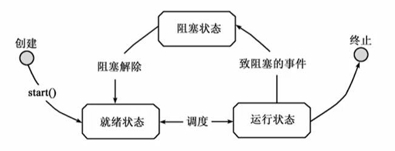

Java中的线程
进程：一个程序的执行
线程：程序中单个顺序的流控制称为线程
一个进程中可以含有多个线程。
一个进程中的多个线程
- 分享CPU(并发的或以时间片方式)
- 共享内存(如多个线程访问同一对象)
Java从语言级别支持多线程
- 如：Object中wait(), notify()
java.lang中的类Thread
线程体
线程体—run()方法来实现的
线程启动后， 系统就自动调用run()方法
通常，run()方法执行一个时间较长的操作
创建线程的两种方法
- 通过继承Thread类创建线程
1
2
3
4
5
6
7
| class MyThread extends Thread{
public void run(){
for(int i=0; i<100; i++){
System.out.print(""+i);
}
}
}
|
- 通过向Thread()构造方法传递Runnable对象来创建线程
1
2
3
4
| class MyTask implements Runable{
public void run(){...}
}
Thread thread = new Thread(mytask);
|
匿名类及Lambda表达式
可用匿名类来实现Runnable
1
2
3
4
5
6
7
| new Thread(){
public void run(){
for(int i=0; i<10; i++){
System.out.println(i);
}
}
}.start();
|
或者用Lambda表达式：
1
| new Thread(()->{...}).start();
|
线程的控制
线程的状态与生命周期

对线程的基本控制
线程的启动：start()
线程的结束：设定一个标记变量，以结束相应的循环及方法
暂时阻止线程的执行：
try{Thread.sleep(1000);} catch( interruptedException e){}
线程的优先级
设定线程的优先级：
- setPriority(int priority)方法
- MIN_PRIORITY, MAX_PRIORITY, NORM_PRIORITY
线程的不确定性
多线程在运行时，有时会出现差错，因为在系统执行的时候，实际编译结果交替运行的时候可能出现重复运行(或者称为无效运行)，这就导致结果不是我们期待的结果，这就是不确定性。多线程同步
同时运行的线程需要共享数据，就必须考虑其他线程的状态与行为，这时就需要实现同步。同步
Java引入了对象互斥锁的概念，来保证共享数据操作的完整性：
- 每个对象都对应于一个monitor(监视器)，它上面一个称为”互斥锁(lock, mutex)”的标记，这个标记用来保证在任一时刻，只能由一个线程访问该对象。
- 关键字synchronized用来与对象的互斥锁联系。
synchronized
synchronized的用法：
- 对代码片段：
synchronized(object){...}
- 对某个方法：
- synchronized放在方法声明中
public synchronized void push(char c){...}- 相当于对synchronized(this)，表示整个方法为同步方法
线程同步控制
- 使用wait()方法可以释放对象锁
- 使用notify()或notifyAll()可以让等待的一个或所有线程进入就绪状态
- Java里面可以将wait和notify放在synchronized里面，是因为Java时这样处理的：
- 在synchronized代码被执行期间，线程调用对象的wait()方法，会释放对象锁标志，然后进入等待状态，然后由其他线程调用notify()或者notifyAll()方法通知正在等待的线程
并发API中增加了更多的类
JDK1.5中增加了更多的类，以便更灵活地使用锁机制
java.util.concurrent.locks包
Lock接口、ReentrantLock类
- lock() tryLock() unlock()
ReadWriteLock接口、ReentrantReadWriteLock类
- .writeLock().lock(), .readLock().unlock()
并发API
java.util.concurrent包及其子包
- 从JDK1.5开始
- 提供了一系列的工具，更好、更方便地使用线程
原子变量
java.util.concurrent.atomic包
- AtomicInteger类
- getAndIncrement()方法
集合与线程
在JDK1.5以前：
- ArrayList/HashMap不是线程安全的
- 产生一个线程安全的集合对象
- Collections.synchronizedArrayList(list)
并发的集合类
java.util.concurrent包中增加了一些方便的类
CopyOnWriteArrayList、CopyOnWriteArraySet：
- 适合于很少写入而读取频繁的对象
ConcurrentHashMap：
- putIfAbsent(), remove(), replace()
ArrayBlockingQueue:
线程池
使用线程池
线程池相关的类：
- ExecutorService接口、ThreadPoolExecutor类
- Executors工具类
常见的用法：
ExecutorService pool = Executors.newCachedThreadPool();- 使用其execute( Runnable r)方法
Timmer
使用java.util.Timmer类：重复某件事
使用javax.swing.Timmer类：重复执行ActionListener注意
在线程中更新图形化界面，要调用SwingUtilites.invokeLater
流式操作及并行的流
起因：既然集合是常见的任务，何不抽取出来？
1
2
| List<Integer> nums = Arrays.asList(1, 2, 3);
nums.stream().forEach(x->{System.out.println(x);});
|
将常见的集合上的操作抽取出来，并能连续地进行操作
从Java8开始，提供了”流(stream)”操作
流(stream)
支持在流上的函数式风格的操作。
得到流：Stream<T> stream = collection.stream();
操作流：
int sumOfWeights = blocks.stream()
.filter(b -> b.getColor() == RED)
.mapToInt(b -> b.getWeight())
.sum();
示例：数组进行流化
1
2
3
4
5
6
7
| Arrays.stream(a)
.filter( i -> i>20)
.map( i -> i*i)
.sorted()
.distinct()
.limit(10)
.max();
|
可以说：Lambda实现了函数式编程
steam的操作种类：
流操作分为两类：
- 中间的： -中间的操作保持流打开状态并允许后续的操作(流的结果是流)
- 如：filter sorted limit map
- 末端的： -末端的操作必须是对流的最终操作(流的结果不是流)
- 如：max min count forEach findAny
流操作的步骤：
- 从某个源头获得一个流
- 执行一个或更多的中间的操作
- 执行一个末端的操作
如何得到Stream：
- 对于数组：
Arrays.stream(ary)
- 对于collection(包括List)：
list.stream()
- 对于Map：没有流，但提供了类似的方法
- 如map.putifAbsent
- map.computeIfPresent
- map.merge
Stream的子接口：
- DoubleStream
- intStream
- LongStream
- Stream
流的并行计算：
- 只需要将
.stream()换成.parallelStream()
- 其他都不变，就可以实现并行计算
- 在一定意义上，stream就是为并行运算而生的